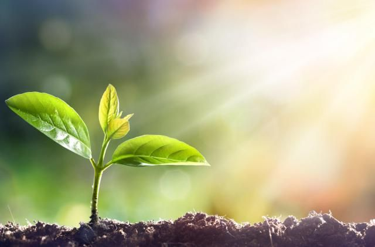
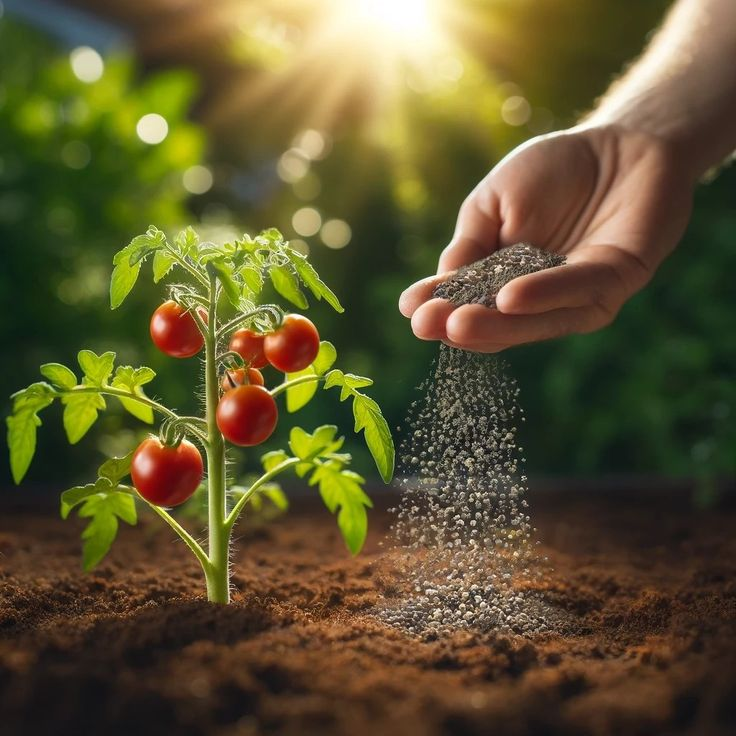

Places used

Agricultural land
Poultry waste can be composted to enhance soil fertility, providing essential nutrients for crops while reducing the need for chemical fertilizers.

Gardening
Incorporate well-composted poultry waste into your garden to improve soil structure, retain moisture, and promote healthy plant growth.

Fertilizer
Poultry manure is a potent natural fertilizer that enriches the soil with nitrogen, phosphorus, and potassium, supporting robust plant health.